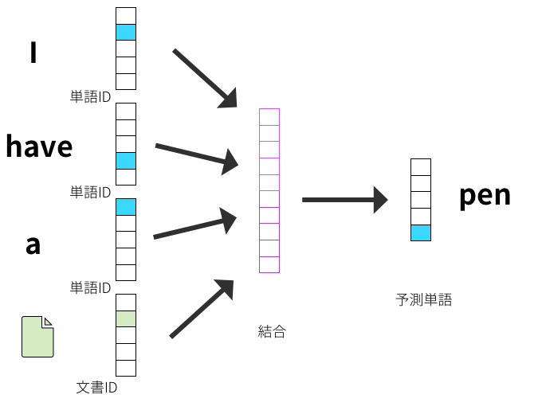

自然言語と時系列処理
1. 準備
2. bskyの分析
以下の例はbskyの 「日銀」 というキーワードを含む投稿を一週間ごとに集計して、 Doc2vecと呼ばれる手法で数値ベクトルに変換している。 このベクトル列ニューラルネットワーク（LSTMなど）に入力すれば、もっと高い精度でグーグルトレンドや株価などの時系列データの予測が可能となる。
1: # pip3 install atproto python-dateutil fugashi --break-system-packages 2: 3: import re 4: import numpy as np 5: import pandas as pd 6: 7: from datetime import datetime, timezone, timedelta 8: from dateutil.relativedelta import relativedelta 9: from atproto import Client 10: from atproto_client.models.app.bsky.feed.search_posts import Params 11: 12: from gensim.models.doc2vec import Doc2Vec, TaggedDocument 13: 14: 15: 16: 17: ACOUNT='xxxxx@omu.ac.jp' 18: PASSWD='passwd' 19: KWD='日銀' 20: 21: 22: 23: def search_posts( 24: query: str, 25: since_date: str, until_date: str , 26: email: str, app_password: str, 27: per_page: int = 100, max_pages: int = 50, 28: ): 29: 30: client = Client() 31: client.login(email, app_password) 32: 33: cursor = None 34: results = [] 35: for _ in range(max_pages): 36: params = Params(q=query, limit=per_page, cursor=cursor, 37: since=since_date, until=until_date) 38: res = client.app.bsky.feed.search_posts(params=params) 39: posts = res.posts or [] 40: results.extend(posts) 41: cursor = getattr(res, "cursor", None) 42: if not cursor or not posts: 43: break 44: return results 45: 46: def posts_to_df(posts): 47: rows = [] 48: for p in posts: 49: record = getattr(p, "record", {}) or {} 50: text = getattr(record, "text", None) or record.get("text", "") 51: created_at = getattr(record, "created_at", None) or record.get("createdAt") 52: 53: if created_at: 54: # createdAt は ISO 8601 文字列 55: dt = datetime.fromisoformat(created_at.replace("Z", "+00:00")) 56: ts = int(dt.timestamp()) # Unix time (秒) 57: else: 58: ts = None 59: 60: rows.append({ 61: "unixtime": ts, 62: "uri": getattr(p, "uri", None), 63: "handle": getattr(getattr(p, "author", None), "handle", None), 64: "text": text, 65: }) 66: 67: df = pd.DataFrame(rows).dropna(subset=["unixtime"]) 68: df = df.set_index("unixtime").sort_index() 69: return df 70: 71: 72: # --- 1) クリーニング & トークナイズ ---------------------------- 73: def clean_text(s: str) -> str: 74: if not isinstance(s, str): 75: return "" 76: s = s.lower() 77: s = re.sub(r'https?://\S+', ' ', s) # URL除去 78: s = re.sub(r'@[A-Za-z0-9_\.]+', ' ', s) # @mention簡易除去 79: s = re.sub(r'\s+', ' ', s).strip() 80: return s 81: 82: def _tokenize_with_fugashi(text: str): 83: try: 84: from fugashi import Tagger 85: tagger = Tagger() 86: return [w.surface for w in tagger(text)] 87: except Exception: 88: return None # 失敗時はフォールバックへ 89: 90: def _tokenize_fallback(text: str): 91: # 日本語（空白が少ない）なら文字2-gram、英数混在なら空白split 92: if ' ' not in text: 93: chars = [c for c in re.sub(r'\s+', '', text)] 94: return [a+b for a, b in zip(chars, chars[1:])] or chars 95: else: 96: return re.findall(r"[A-Za-z0-9_#@]+|[一-龥ぁ-んァ-ヶー]+", text) 97: 98: def tokenize(text: str): 99: text = clean_text(text) 100: toks = _tokenize_with_fugashi(text) 101: return toks if toks else _tokenize_fallback(text) 102: 103: # --- 2) 週（JST）にまとめて TaggedDocument 化 ------------------- 104: def make_weekly_documents(df: pd.DataFrame, 105: text_col: str = "text", 106: jst: bool = True, 107: rule: str = "W-MON"): 108: """ 109: df: index=unixtime(秒) の DataFrame を想定。textカラム必須。 110: jst=TrueならJST(UTC+9)に変換して週集計（rule=W-MON: 月曜始まり） 111: """ 112: assert text_col in df.columns, f"'{text_col}' column not found" 113: s = df[text_col].fillna("").astype(str) 114: 115: # index(unixtime秒) → datetime（UTC） 116: dt_utc = pd.to_datetime(df.index, unit="s", utc=True) 117: if jst: 118: tz = timezone(timedelta(hours=9)) 119: dt = dt_utc.tz_convert(tz) 120: else: 121: dt = dt_utc 122: 123: tmp = pd.DataFrame({"text": s, "dt": dt}) 124: # 週ごとにテキスト結合 125: weekly = tmp.resample(rule, on="dt")["text"].apply(lambda x: "\n".join(x)).dropna() 126: # 週の代表日時（期首）を index に 127: weekly.index.name = "week_start" 128: 129: # TaggedDocument 化 130: docs = [] 131: tags = [] 132: for ws, text in weekly.items(): 133: tokens = tokenize(text) 134: tag = f"week_{ws.strftime('%Y-%m-%d')}" 135: docs.append(TaggedDocument(words=tokens, tags=[tag])) 136: tags.append((ws, tag)) 137: return docs, tags # tags: [(Timestamp, "week_YYYY-MM-DD"), ...] 138: 139: # --- 3) Doc2Vec を訓練 → 週ベクトルの DataFrame ----------------- 140: def train_doc2vec_and_vectorize(docs, 141: vector_size: int = 128, 142: window: int = 10, 143: min_count: int = 2, 144: epochs: int = 40, 145: dm: int = 1, 146: seed: int = 42): 147: model = Doc2Vec(vector_size=vector_size, 148: window=window, 149: min_count=min_count, 150: workers=4, 151: epochs=epochs, 152: dm=dm, 153: seed=seed) 154: model.build_vocab(docs) 155: model.train(docs, total_examples=len(docs), epochs=model.epochs) 156: return model 157: 158: def weekly_vectors_df(model: Doc2Vec, tags): 159: # tags: [(week_start_ts, "week_YYYY-MM-DD"), ...] 160: rows = [] 161: index = [] 162: for ws, tag in tags: 163: vec = model.dv[tag] # 学習済み → 直接取り出し 164: rows.append(vec) 165: index.append(ws) 166: mat = np.vstack(rows) if rows else np.zeros((0, model.vector_size)) 167: dfv = pd.DataFrame(mat, index=pd.DatetimeIndex(index, name="week_start")) 168: return dfv.sort_index() 169: 170: # --- 4) 使い方（例） ------------------------------------------- 171: 172: since_date='2024-07-31T15:00:00Z' 173: until_date='2025-08-31T15:00:00Z' 174: 175: posts = search_posts( 176: KWD, 177: since_date, 178: until_date, 179: ACOUNT, 180: PASSWD, 181: 100, 50, 182: ) 183: # for p in posts: 184: # print(p.uri, p.author.handle, getattr(p.record, "text", "")) 185: 186: 187: posts_df = posts_to_df(posts) 188: #print(posts_df.head()) 189: print(posts_df) 190: 191: 192: 193: # posts_df は「unixtime を index」「text カラム」を持つ DataFrame を想定 194: # posts_df = posts_to_df(posts) # 以前作った関数がある場合 195: 196: docs, tags = make_weekly_documents(posts_df, text_col="text", jst=True, rule="W-MON") 197: model = train_doc2vec_and_vectorize(docs, vector_size=128, window=10, min_count=2, epochs=40, dm=1) 198: vecdf = weekly_vectors_df(model, tags) 199: print(vecdf.shape) # (週数, 128) 200: print(vecdf.head()) # 週ごとの特徴ベクトル（時系列）
3. doc2vecについて
https://deepage.net/machine_learning/2017/01/08/doc2vec.html

図1: doc2vec
4. 演習
- 自分が興味ある単語のについてbskyの投稿を取得してみよう
- 取得した特徴をDoc2vecで数値にしてみよう
- ここでは週ごとにまとめているが日ごとにまとめることもできる。マイナーな単語ではなく、必ず誰かが毎日投稿するようなキーワードにして、日毎にベクトルを計算してみよう
- Unix time とJSTの関係を調べてみよう。このプログラムでは、どこでその処理を行っているか確認せよ
5. 課題
- 自分が興味ある単語のについてbskyの投稿を取得して、そのベクトル表現からgoogleトレンドや株価などの時系列変化を予測するニューラルネットワーク（できれだけLSTMで）を作れ。
- そのニューラルネットワークの計算結果から何がわかるか考察せよ